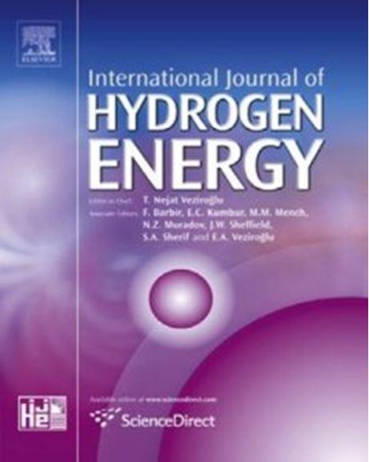
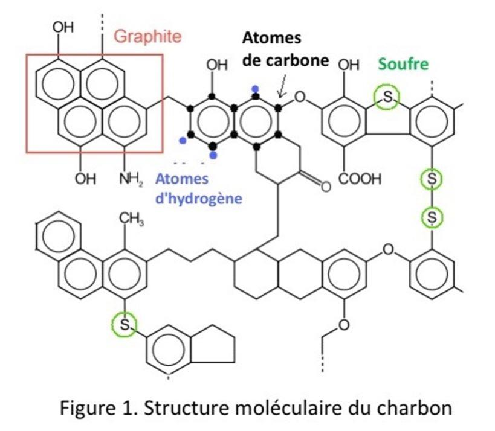
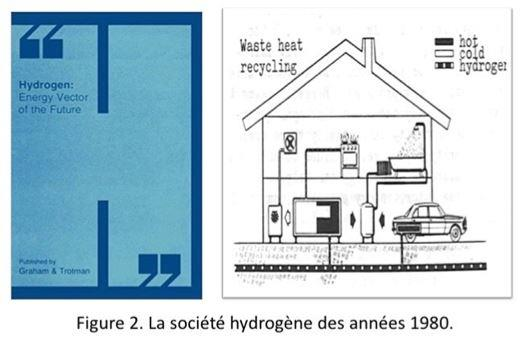
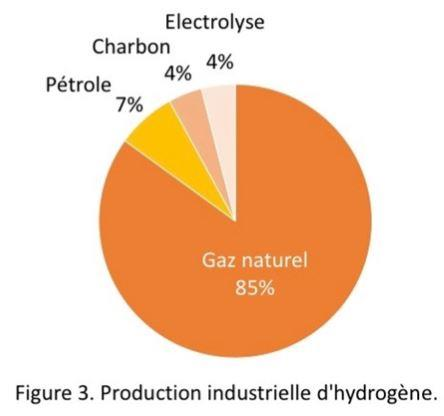
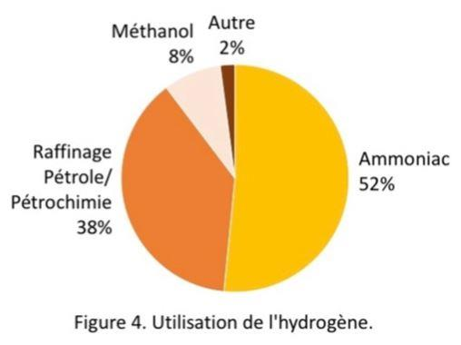
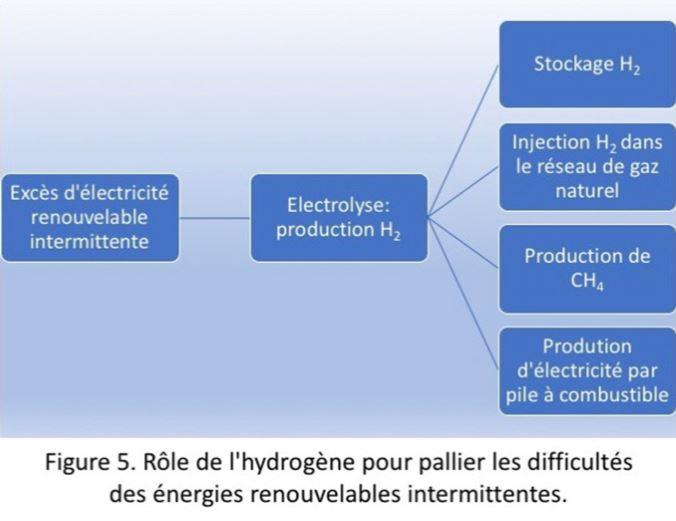
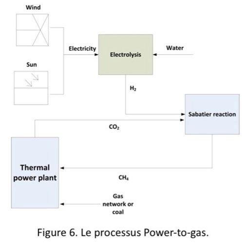
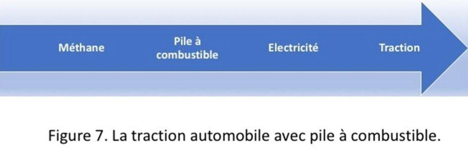
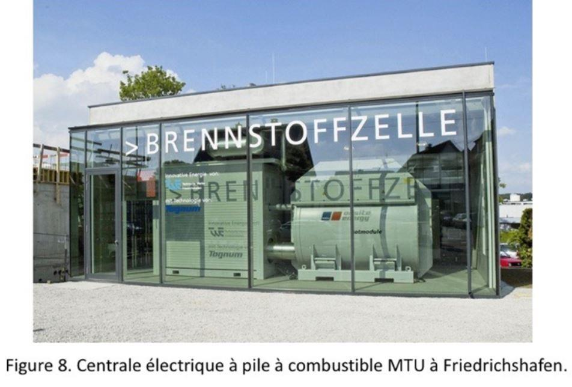

L’hydrogène est un sujet captivant, mais une terrible illusion si on pense à lui comme combustible alternatif. Le public et le monde politique semblent fascinés par cette molécule perçue comme une panacée pour la politique énergétique. Est-ce parce qu’ils ont appris à l’école que c’est le premier élément du tableau de Mendeleïev ? Est-ce parce que ça sonne plus « scientifique » que le charbon ou le pétrole ? Est-ce parce qu’il y a tellement longtemps qu’on en parle qu’ils pensent qu’il faudra bien un jour qu’il perce ? Toujours est-il que cette « énergie alternative » suscite un tel engouement que tout le monde en parle et qu’il convient donc de revenir aux fondamentaux.
La revue scientifique « International Journal of Hydrogen Energy » publie depuis 1976 des articles rédigés par les chercheurs les plus avertis sur les nombreuses recherches menées dans le monde entier afin de trouver des solutions scientifiquement fondées. Cependant, entre la science et la perception publique ou la sphère politique il y a un abîme. Ces dernières années l’hydrogène a été présenté par Jeremy Rifkin, un gourou dans le domaine de l’hydrogène, prônant « The Hydrogen Economy », dans laquelle ce gaz remplacerait les combustibles fossiles notamment pour les transports et serait une source majeure de génération d’électricité.
Bon orateur, Rifkin qui a été invité partout dans le monde, a réussi à convaincre un bon nombre de politiciens au plus haut niveau, en particulier dans l’UE, à tel point que même des personnalités les plus célèbres ont fini par croire que la révolution de l’hydrogène était arrivée ou du moins en marche forcée. Cela fait maintenant plus de 15 ans qu’il répète son mantra même si ces dernières années son aura semble s’atténuer. Même si l’effet « abracadabra » ne fonctionne pas dans la science et la technologie et s’il n’a plus le succès d’il y a quelques années son credo reste ancré malgré les lois fondamentales de la chimie.
Commençons par le début : l’hydrogène H2 n’est pas une source d’énergie. Il est un vecteur d’énergie car il doit d’abord être produit à partir d’autres énergies primaires ou finales. Pour illustrer ce concept, si on peut dire que l’électricité est une forme d’énergie le câble qui la transporte n’est pas de l’énergie. Il en est de même pour l’hydrogène, ce n’est pas une forme d’énergie mais un instrument pour la transporter.
L’avantage de ce vecteur est qu’il ne produit que de l’eau mais beaucoup d’énergie lorsqu’il est brûlé :
H2 + ½ O2 → H2O
∆H° = – 483,88 kJ à 25°C
Si la combustion de l’hydrogène est effectivement propre malheureusement il n’existe presque pas à l’état libre dans la nature. Il doit donc être produit à partir d’autres sources. Sur la planète Terre, on trouve deux ressources naturelles contenant des atomes d’hydrogène : l’eau et les hydrocarbures (CnHm). Puisque l’hydrogène est une matière première de base de l’industrie chimique, sa production est très connue depuis des années et il sera difficile de réaliser de réels progrès dans ce domaine. L’hydrogène n’est pas un nouveau produit du tout comme nous allons le voir !
On est déjà passé par là…
Il y a eu plusieurs vagues d’engouement pour l’hydrogène comme source d’énergie sur lequel il vaut la peine de s’attarder même brièvement afin de réaliser que ce que nous vivons actuellement … a déjà eu lieu.
Au début des années 70, sur base de résultats fournis par des ordinateurs, le Club de Rome propage une vague de peur et conseille une halte à la croissance. A l’époque la modélisation par ordinateur était innovante et donc attractive. Tout le monde a cru que la fin du pétrole annoncée pour 2000 était une vérité scientifique, un peu comme aujourd’hui avec les modèles qui suscitent des peurs de changements climatiques causés par les émissions de CO2. Le charbon, très abondant dans le monde et ne présentant aucun risque géopolitique tellement il est abondant dans nombre de pays, y compris de l’OCDE, est apparu alors comme étant la solution immédiate pour faire face « à la fin du pétrole » décrétée par le Club de Rome. Tous les groupes pétroliers se sont mis à investir dans des mines de charbon à travers le monde en vue de disposer de l’énergie primaire qui allait permettre de produire du pétrole de synthèse. En effet, les Nazis qui eux aussi manquaient de pétrole avaient démontré qu’il était techniquement possible de produire des produits pétroliers à partir de houille ou de lignite.
Du point de vue chimique, ce qu’on appelle liquéfaction du charbon consiste à augmenter fortement le rapport hydrogène : carbone c’est à dire à ajouter de l’hydrogène à la structure moléculaire du charbon. Celui-ci est de nature très aromatique de sorte qu’il y a statistiquement seulement 0,7 atome d’hydrogène pour un atome de carbone (Figure 1). Pour le pétrole brut ce rapport est de de l’ordre de 1,6 et pour l’essence il est de 2,0 [1]. Ceci signifie qu’il faut ajouter de l’hydrogène pour transformer le charbon en produits pétroliers. Il y a pour cela deux techniques toutes deux largement utilisées par les Nazis.
Dans la liquéfaction indirecte ou processus Bergius le charbon finement broyé est placé dans un autoclave sous pression d’hydrogène de 20-70 bars et à température de 400-500°C dans une solution d’hydrocarbures liquides. Une partie du charbon absorbe de l’hydrogène pour générer un mélange d’hydrocarbures liquides, le restant du charbon non converti étant brûlé pour générer de l’électricité.
La liquéfaction directe consiste à gazéifier le charbon en présence de vapeur d’eau (réaction endothermique) pour produire ce qu’on appelle du gaz de synthèse (un mélange de CO et H2) et ensuite à transformer ce mélange gazeux par une réaction catalytique de Fischer-Tropsch qui permet de produire, en fonction des conditions de pression et de température ainsi que du rapport C : H du gaz de synthèse et du catalyseur, le type de produit liquide désiré. Les réactions sont multiples mais de ce type :
C + H2O → CO + H2
CO + H2 → hydrocarbures + autres produits
Par exemple :
n CO + (2n+1) H2 → Cn H(2n+2) + n H2O
Le besoin d’hydrocarbures et la possibilité d’en produire par la gazéification du charbon a suscité au début des années 80 en engouement pour l’hydrogène de sorte que de nombreux projets de recherche ont été financés par la Commission européenne notamment dans son centre de recherche nucléaire de Ispra (Italie).
Pourquoi Ispra ? Parce que là dans les années 60 on avait étudié les réacteurs nucléaires HTGR « High Temperature Gas cooled Reactors » ce qui avait conduit à envisager ces réacteurs pour décomposer l’eau en H2 et O2 dans un cycle de réactions chimiques à haute température [2]. Ce cycle de réactions fait appel à des éléments extérieurs (par exemple iode et soufre) qui permettent de décomposer l’eau tout en étant recyclés.
La « société hydrogène » a été conçue à cette occasion. Tout y a été pensé et étudié. Par exemple on avait étudié la possibilité de produire de l’hydrogène par électrolyse au Québec qui possédait à l’époque – et encore aujourd’hui – un potentiel hydroélectrique gigantesque et de transporter par voie maritime cette « énergie alternative » en Europe [3]. L’hydrogène aurait été tellement abondant que tout allait fonctionner avec cette « énergie alternative ». Comme l’illustre la Figure 2 [4], tout le secteur domestique allait être investi par l’hydrogène moderne ; celui-ci aurait été produit en tellement grande quantité qu’il allait être distribué par conduite souterraine dans les zones urbaines.
Il aurait été utilisé pour générer l’électricité par pile à combustible et même pour être brûlé pour produire l’eau chaude sanitaire et pour cuisiner. Bien entendu il devait également être utilisé pour remplacer les produits pétroliers dans le secteur du transport. Ce rêve s’est fracassé lorsque l’évaluation des coûts a été faite … d’autant plus que le contre-choc pétrolier du milieu des années 80 a fait chuter le prix du brut. On avait sifflé la fin de la récréation idéologique.
Après une période de latence d’une vingtaine d’années, sans que toutefois le rêve H2 soit totalement évacué, on a assisté à une nouvelle résurgence de l’intérêt. L’intérêt pour la décomposition thermique de l’eau est brièvement réapparu vers 2000 à l’initiative notamment du prix Nobel Carlo Rubbia. Nucléariste, il a proposé de nouveau la production d’hydrogène via la chaleur fournie par des réacteurs à haute température (HTR). Tout est possible du moment que les principes de la thermodynamique sont respectés mais tout n’a pas nécessairement un sens économique.
L’Administration Bush a voulu relancer l’intérêt sans doute sous l’influence du lobby de l’industrie des piles à combustible et aussi pour ne pas paraître totalement fermée à la volonté de lutter contre les émissions de gaz à effet de serre. Bush dans son discours sur l’état de l’Union en janvier 2003 déclarait œuvrer pour une révolution de l’hydrogène qui transformerait la manière dont les gens vivent, travaillent et conduisent. Le projet présidentiel devait aider à avancer vers une ère de voitures et de camions roulant aux piles à combustible à hydrogène. Pour faire de cette vision une réalité, le président Bush s’était engagé à investir 1,2 milliard $ sur les 5 ans à venir pour la recherche, les infrastructures et le développement de voitures roulant à l’hydrogène. En fait, il s’agissait d’un subterfuge de communication. Il était plus explicite de parler d’hydrogène que de parler de piles à combustibles. Mais la ficelle est assez grosse car le parallèle consisterait à parler de filière chlorophylle pour ne pas parler de combustion du bois, l’hydrogène étant produit il est vrai dans une pile à combustible fonctionnant au gaz naturel. En l’occurrence, dans le chef des américains il n’a jamais été question de produire de l’hydrogène à partir d’énergies renouvelables mais bien de méthane, l’énergie fossile la plus adaptée aux piles à combustible. En juin 2003 une conférence UE-USA sur l’hydrogène s’est tenue à Bruxelles sous les auspices de Romano Prodi, très stimulé par son frère Vittorio Prodi (physicien et parlementaire européen), mais contrairement aux américains du côté européen on a préféré mettre plutôt l’accent sur les énergies renouvelables, ce qui n’avait pas convaincu tout le monde.
Après cet épisode, l’intérêt pour la politique de l’hydrogène s’est atténué mais sans pour autant disparaître puisque notamment la Commission européenne a créé en mai 2008 la Fuel Cells and Hydrogen Joint Undertaking, un partenariat public-privé qui soutient les activités de recherche, de développement technologique et de démonstration dans les technologies des piles à combustible et de l’hydrogène en Europe. Son objectif est d’accélérer l’introduction sur le marché de ces technologies. Ce partenariat public-privé implique la Commission européenne, l’industrie européenne et divers organismes de recherche publique.
La production industrielle de l’hydrogène
L’hydrogène peut être produit par électrolyse de l’eau où l’électricité dissocie les molécules d’eau en hydrogène H2 et en oxygène O2. C’est un procédé très énergivore puisque la molécule d’eau à l’instar de celle de CO2 est très stable. Tout ce qu’on désire faire avec H2O et CO2, qui sont en quelque sorte le pot d’échappement de la vie, va nécessiter beaucoup d’énergie. On dit en chimie que leur énergie de formation est élevée et que pour rompre ces molécules il faut fournir autant d’énergie qu’il en a fallu pour les créer.
En théorie, la dissociation de l’eau en H2 et O2 par électrolyse nécessite une différence de potentiel entre les deux électrodes de 1,23 volt. Cependant, l’électrolyse de l’eau pure nécessite un supplément d’énergie car l’eau est un assez bon isolant de sorte qu’il faut surmonter une série de barrières d’activation. La plupart des électrolyses sont ainsi réalisées dans des milieux corrosifs, fortement basiques.
2 H2O (gaz) → 2 H2 + O2
∆H° = 2 x 241,94 = 483,88 kJ à 25°C
À 25°C il faut fournir 483,88 kJ pour obtenir deux môles de H2 (4 g) d’où 120.970 kJ pour un kg de H2. Si l’énergie est fournie sous forme électrique cela représente 33,6 kWh/kg d’hydrogène. Toutefois en tenant compte de la résistance électrique de l’électrolyte et des pertes de rendement cette quantité théorique devient en processus industriel 46,9 kWh/kg d’hydrogène. Le Departement of Energy des États-Unis est en train de développer des recherches dans l’espoir de limiter cette consommation à 42 kWh/kg d’hydrogène d’ici 2020. Même si cet objectif devait être atteint, cela restera un processus très énergivore. Il y a des recherches en cours pour trouver de nouvelles façons de produire de l’hydrogène de façon économique, mais encore aucune percée.
Il en résulte que seulement 4 % de toute la production industrielle d’hydrogène provient de l’électrolyse (Figure 3) mais en plus c’est en tant que sous-produit de la préparation électrolytique du chlore et de l’hydroxyde de sodium.
La production industrielle la plus importante est de loin celle du vaporeformage du méthane car c’est l’hydrocarbure qui contient le plus haut rapport atomique hydrogène : carbone (Figure 3).
L’hydrogène est produit par la réduction du méthane à haute température (700°C à 1100°C) sur un catalyseur à base de nickel. La première étape est une réaction de reformage vapeur-méthane et la seconde étape est ce que l’on appelle la « réaction de gaz à l’eau » où le monoxyde de carbone et la vapeur d’eau réagissent en présence d’un catalyseur pour produire du dioxyde de carbone et plus d’hydrogène.
CH4 + H2O → CO + 3 H2
CO + H2O → CO2 + H2
CH4 + 2 H2O → CO2 + 4 H2
Comme nous pouvons le voir, le CO2 est toujours formé lorsque les hydrocarbures sont utilisés. Puisque l’hydrogène est le premier élément chimique du tableau de Mendeleïev il est léger, de sorte que la production de 1 kg de H2 génère 5,5 kg de CO2. Il peut aussi être produit à partir de pétrole ou de charbon par une réaction similaire mais avec plus de CO2 comme sous-produit à cause du rapport atomique hydrogène : carbone moins favorable comme nous l’avons vu.
L’utilisation la plus importante de l’hydrogène est la production d’ammoniac (NH3), qui à son tour est principalement utilisé pour produire des engrais (Figure 4). Mais il est aussi abondamment utilisé dans le raffinage du pétrole et la pétrochimie, toujours pour la même raison : accroître le rapport H : C dans les produits de base de la chimie industrielle.
C’est pourquoi l’hydrogène est un produit fondamental de la chimie industrielle et donc un produit à haute valeur ajoutée. Brûler de l’hydrogène est un contresens chimique, économique et environnemental. L’hydrogène est un produit de luxe qui ne sera pas utilisé à des fins de combustion quoi qu’en disent les politiciens.
Le volume du marché de l’hydrogène est très important car cette molécule est fondamentale pour l’industrie chimique et pétrochimique. L’Agence Internationale de l’Énergie rapporte que le marché de la production d’hydrogène était de 115 milliards US$ en 2017 et devrait atteindre 155 milliards US$ en 2022. Ce marché se répartit en deux branches distinctes : la production d’hydrogène in situ dans les raffineries et le marché alimenté par des producteurs autres que les raffineurs. Selon la dernière étude de 2014 de Freedonia Group la consommation mondiale d’hydrogène captif et marchand devrait croître de 3,5 % par an d’ici 2018 à plus de 300 milliards m3, grâce à une utilisation accrue de l’hydrotraitement dans les raffineries, notamment dans les pays en développement d’Asie. Cette étude annonce que le volume d’hydrogène produit par des non-raffineurs augmentera de plus de 5 % chaque année car les besoins en hydrogène des raffineries de pétrole dépassent les ressources captives disponibles des raffineurs.
Depuis l’adoption par les pays développés dans les années 80 et 90 de réglementations environnementales pour combattre les émissions des véhicules automobiles, notamment, l’élimination du soufre contenu dans les carburants, la consommation d’hydrogène dans le raffinage du pétrole a considérablement augmenté. L’hydrogénation consiste à éliminer le soufre contenu dans les produits pétroliers ou le naphta selon la réaction catalytique générale suivante :
CnHmSH + H2 → CnH(m+1) + H2S
Puisque les pays en développement mais aussi la Chine et l’Inde adoptent des réglementations similaires la demande mondiale en l’hydrogène augmentera encore plus. Si le transport maritime devait suivre également cette tendance d’abandon progressif de l’utilisation du fuel à haute teneur en soufre le besoin en l’hydrogène augmenterait d’autant plus.
Tout cela démontre que les besoins en hydrogène industriel ne sont pas près de disparaître et qu’il est donc étrange que certains pensent à brûler cette molécule si importante que d’autres s’évertuent à produire pour son noble usage chimique.
Signalons également que l’hydrogène est un gaz particulièrement léger, avec une densité très faible. En effet, 1 kg d’hydrogène occupe 11 m3 à température et pression atmosphérique ambiante. Pour toutes les applications pratiques, l’hydrogène doit être transporté dans des conduites (sous une pression modérée). Il doit être stocké sous haute pression (200 bar) dans des bonbonnes adaptées. Le problème de sécurité de ces cylindres hautement pressurisés, couplé à la forte réactivité et au contenu énergétique de la molécule d’hydrogène et à son extrême volatilité, est certainement un sujet de préoccupation, en particulier dans les zones urbaines.
La renaissance de l’intérêt pour l’hydrogène
Ces dernières années on a vu resurgir encore plus fortement l’intérêt pour cette molécule. Cette fois l’intérêt est venu d’Allemagne. Ce pays est sans aucun doute devenu le champion de la production d’électricité d’origine renouvelable. Où que l’on soit dans ce pays on peut observer des fermes éoliennes ou des panneaux photovoltaïques. En valeur absolue l’Allemagne est le plus grand producteur d’énergies renouvelables (39,5 Mtep) et représente 19 % de toute la production de l’UE. Malgré ces résultats extraordinaires – et les 25 milliards d’euros par an que cela coûte – l’Allemagne est confrontée à ce que les ingénieurs électriciens avaient annoncé au début de la frénésie en faveur des énergies renouvelables : l’éolien et le solaire photovoltaïque sont intermittents et cela perturbe fortement la gestion du réseau électrique. Le prix des panneaux photovoltaïques a beau diminuer, le prix de l’électricité renouvelable augmente précisément à cause de cette intermittence. L’accroissement du prix moyen dans l’UE a été de 3,2 % par an entre 2008 et 2015. En conséquence le prix de l’électricité domestique en Allemagne est de 294,5 €/MWh tout proche du record du prix le plus élevé du Danemark qui dépasse légèrement les 300 €/MWh.
Ce succès indéniable montre toutefois sa limite à cause de l’intermittence et à cause du prix qui ne sera sans doute pas soutenu indéfiniment par la population allemande qui est doublement mise à contribution car c’est à elle qu’il incombe d’alléger la facture des industriels allemands qui sont eux soumis à la concurrence. Le gouvernement fait payer aux consommateurs domestiques le surcoût qu’aurait dû payer le secteur industriel.
C’est pourquoi l’ensemble des acteurs industriels et politiques d’Allemagne ont décidé de miser sur l’hydrogène en développant plusieurs filières (Figure 5). Le surplus d’électricité renouvelable généré lorsqu’il n’y a pas d’acheteur, plutôt que d’être vendu à prix négatif comme c’est le cas actuellement, devrait servir à générer de l’hydrogène par électrolyse de l’eau. C’est la notion de « power to gas – P2G » (de l’électricité au gaz). On va même jusqu’à prétendre qu’il peut également être injecté dans le réseau de gaz naturel. Cet hydrogène aurait du sens si le prix de la production par électrolyse était moindre que celui de la production industrielle actuelle. Cependant, c’est un non-sens car le prix de l’hydrogène est beaucoup plus élevé que celui du gaz naturel : on ne dilue jamais un produit cher dans un produit bon marché !
On parle aussi de Power to Power (P2P) pour produire de l’électricité à partir de l’hydrogène dans une pile à combustible. Mais une étude pour le Premier Ministre français estime que « les éléments technico-économiques disponibles […] de production solaire avec stockage à l’aide d’hydrogène révèlent des coûts de production extraordinairement élevés, même pour une expérimentation. Au total, le stockage d'électricité via l’hydrogène apparaît aujourd’hui hors de toute rentabilité. » Il ne faudrait même pas dépenser de l’argent pour de telles études tellement c’est une évidence.
France Stratégie, une institution rattachée au Premier ministre, estime qu’ « en raison de son coût, le stockage énergétique via l’hydrogène dans le réseau de gaz n’apparaît pas pertinent à un horizon prévisible ». Quel que soit le processus, le prix sera très élevé. Le prix international de l’hydrogène est en effet d’environ 2,3 $/kg et l’association française pour l’hydrogène AFHYPAC a calculé une fourchette de prix allant de 3 à 20 €/kg … en 2025.
Une autre possibilité de stockage de l’énergie consiste à combiner de l’hydrogène produit par électrolyse avec du dioxyde de carbone afin de produire du méthane selon la réaction exothermique bien connue de Sabatier :
CO2 + 4 H2 ↔ CH4 + 2 H2O
∆H° = – 164,88 kJ à 25°C
Cette réaction est utilisée par la NASA dans la station spatiale internationale pour produire de l’eau à partir du dioxyde de carbone exhalé par les astronautes et de l’hydrogène produit par électrolyse. Cela fonctionne mais d’évidence c’est une niche qui n’a aucun sens économique. Il faut beaucoup de foi pour espérer produire des quantités massives de méthane à partir d’hydrogène issu de l’électrolyse grâce à l’énergie éolienne ou solaire. Selon le rapport demandé par M. Emmanuel Macron lorsqu’il était ministre de l’économie en septembre 2015 , le coût du méthane produit par cette synthèse serait près de trois fois plus élevé́ que le prix de gros du gaz naturel. Selon l’Agence Internationale de l’Énergie en 2030 citée dans ce rapport « Macron », la filière hydrogène resterait environ deux fois plus chère que les prix de gros du gaz naturel fossile. Cela était avant que l’on admette que le gaz naturel est tellement abondant que son prix à l’avenir ne peut que diminuer, enlevant ainsi le peu d’espoir qui restait en cette filière. Toujours selon l’Agence Internationale de l’Énergie le coût d’abattement de la tonne de CO2 serait pour la filière P2P de l’ordre de 400$/t CO2 en 2030 : un prix que personne n’envisage tant il est éloigné de la réalité admissible économiquement.
Même si nous admettons que ces chiffres sont purement indicatifs – parce que les coûts réels sont systématiquement plus élevés que ceux prévus dans les études – il est très peu probable que le marché soit disposé à payer ce prix. De plus, comment pouvons-nous espérer avoir toujours un excès d’électricité alors que nous nous efforçons de toujours en produire plus. D’autre part, afin de créer un véritable marché européen de l’électricité, l’UE finance et favorise la construction de nouvelles interconnexions électriques transfrontalières qui vont permettre qu’un surplus d’électricité dans un État membre puisse être utilisé dans un autre. Ce surplus d’électricité renouvelable évoqué par les allemands ne pourra exister que lorsque toute l’électricité de l’UE sera d’origine renouvelable. Il est donc certain qu’il y aura toujours un acheteur pour le surplus d’électricité renouvelable qui serait produit n’importe où dans l’Union et que donc le fondement énergétique de la filière P2G n’existe tout simplement pas. Pourquoi les entreprises allemandes étudient cette P2G alors que les autres pays sont plutôt sceptiques ? Parce que l’Allemagne a un problème avec son excès d’électricité produite par des énergies renouvelables intermittentes, ce qui n’est pas le cas pour d’autres pays.
D’où vient le CO2 qui est l’autre réactif de la réaction de Sabatier ? Des centrales électriques à combustibles fossiles !
Dans l’ensemble, la réaction de Sabatier reste un processus très improbable car malgré l’efficacité de chaque réaction individuelle l’efficacité globale restera extrêmement faible. Rappelons, en effet, qu’une succession de trois réactions efficaces à 80 % résulte à la fin en un rendement réduit de moitié car
0,8 x 0,8 x 0,8 = 0,54.
Quoi qu’il en soit, si par pure idéologie on voulait absolument produire de l’hydrogène « vert » il serait plus logique de produire de l’électricité à partir du vent, mais sans connexion au réseau électrique et de produire de l’hydrogène par électrolyse de l’eau et de vendre le précieux produit à l’industrie chimique. Reste à voir quel serait le prix de revient…
Avec un peu de chimie nous allons voir que cette idée est encore plus saugrenue…
À 25°C la réaction de Sabatier libère 164,88 kJ par môle de CH4 formé (16 g) d’où 10.305 kJ par kg de CH4. A 350°C (température habituelle pour cette réaction), tenant compte des capacités calorifiques molaires, la réaction libère 274,9 kJ par môle de CH4 formé. La réaction de Sabatier est donc exothermique et partant thermodynamiquement favorable. Divers catalyseurs permettent de réduire son énergie d’activation et de l’effectuer dans de bonnes conditions.
Toutefois il convient de coupler cette réaction avec celle de l’électrolyse de l’eau :
2 x (2 H2O (gaz) → 2 H2 + O2)
∆H° = 2 x 483,88 = 967,76 kJ à 25°C
4 H2 + CO2 → CH4 + 2H2O (gaz)
∆H° = – 164,88 kJ à 25°C
La réaction globale est donc :
2 H2O + CO2 → CH4 + 2 O2
∆H° = 802,88 kJ à 25° C
Globalement il faut fournir 802,88 kJ par môle de CH4 formé (16 g) d’où 50.180 kJ par kg de CH4. L’électrolyse de l’eau couplée avec la réaction de Sabatier exige donc 802 kJ par môle de CH4 produite. En fait, on retrouve en sens inverse la réaction de combustion du méthane :
CH4 + 2 O2 → 2 H2O + CO2
∆H° = – 802,88 kJ à 25° C
Toute cette opération exige donc autant d’énergie qu’en produit la combustion du méthane. De plus, puisque ces opérations devront se faire en processus industriel les rendements ne seront pas ceux théoriques de sorte que l’on peut conclure que cette opération est une aberration chimique, économique et environnementale.
Les mauvaises idées telles que les moteurs à eau ne meurent jamais. Pire encore, parfois elles deviennent des lois … Mais ce n’est pas le cas partout dans le monde. L’académicien russe Eduard P. Volkov (l’un des plus grands érudits russes actuels) a déclaré au Club de Géopolitique de Nice en 2015 que lorsqu’il a présenté au président Vladimir Poutine d’éventuelles idées sur l’innovation énergétique, il a reçu la réponse suivante : « Il y a tellement de pétrole et de gaz à bas prix, pourquoi voulez-vous que nous dépensions de l’argent pour vos projets ? » [5].
L’hydrogène pour la mobilité
L’attaque surprenante, tant par sa rapidité que par son manque de justification, envers la voiture diesel a donné en Europe un nouveau souffle à la voiture à l’hydrogène.
En fait l’idée de brûler de l’hydrogène dans un moteur thermique relève depuis quelque temps de l’anecdote. L’intérêt pour l’hydrogène en tant que carburant alternatif pour le transport repose plutôt sur les piles à combustible pour les véhicules électriques. Plusieurs constructeurs de véhicules ont commencé à fabriquer des véhicules électriques légers à pile à combustible à hydrogène. Certes il y a le problème de la fiabilité des piles à combustible ainsi que le prix de revient mais surtout l’absence d’un réseau de ravitaillement, problème qui ne sera probablement pas résolu de si tôt. Qui voudra acheter de telles voitures si les stations de ravitaillement en hydrogène ne sont pas facilement accessibles, et les compagnies ne construiront pas de stations de ravitaillement si elles n’ont pas de clients avec des véhicules à hydrogène. C’est le problème de l’œuf et de la poule.
L’optimisme de la Hydrogen Joint Undertaking que nous avons rencontré plus haut surprend. Elle annonçait que le nombre de stations de ravitaillement devrait augmenter et devrait passer d’environ 20 en 2016 à plus de 50 au cours des deux prochaines années. De nombreuses recherches sont en cours mais d’évidence il faudra de longues années pour mettre au point ces nouvelles technologies et il faudra encore démontrer que tout cela a un sens économique. Selon la Joint Undertaking il y a encore de nombreuses questions à résoudre, mais apparemment les politiciens n’en ont cure ; ils veulent imposer une non-solution tout de suite.
Toutefois le coût élevé des piles à combustible et la disponibilité limitée des stations de ravitaillement en hydrogène limitent le nombre de véhicules fonctionnant à l’hydrogène de sorte que c’est à la pompe de gaz naturel qu’il faudra s’approvisionner pour ce genre de véhicules et non pas à la pompe à hydrogène (Figure 7).
Le principe des piles à combustible est connu depuis très longtemps. Son application industrielle se heurte constamment à la dure réalité des coûts. Pour avoir géré le développement européen de ce secteur entre 1998 et 2004 j’ai appris à être confronté à cette inexpugnable réalité. Malgré des années d’efforts déterminés tant par l’industrie que par les pouvoirs public – y compris avec des financements très importants en Allemagne (Figure 7) – il a bien fallu constater l’échec de l’industrialisation des piles à combustible pour usage stationnaire. Une des causes principales est que d’une part les électrodes sont constituées de métaux nobles et donc onéreux et d’autre part que la fabrication ne peut être automatisée ce qui conduit à un coût de production élevé. Ce sont ces éléments qui ont conduit l’Allemagne à abandonner cette filière dans laquelle elle s’était fortement investie avec des aides publiques consistantes. Si on ne parvient pas à maitriser les coûts pour des grandes installations qu’est-ce qui peut justifier de prétendre que la miniaturisation parviendra à réduire les coûts ? D’ailleurs en Allemagne les voitures à piles à combustibles ne suscitent pas le même engouement que les véhicules électriques. Tant que le coût de production ne sera pas divisé par un facteur d’au moins dix – ce qui est hautement improbable dans un avenir prévisible – le développement significatif de ce type de véhicule n’aura pas lieu.
Il convient de ne pas perdre de vue que dans le domaine de l’automobile le marché est mondialisé et que l’avenir de la production ne dépend pas de niches comme peuvent l’être les Ferrari ou les Tesla. Penser que l’Asie et plus tard l’Afrique vont développer des réseaux de distribution d’hydrogène relève de l’utopie. Leurs besoins de croissance sont tels qu’ils ne peuvent se préoccuper de niches ou de solutions innovantes dont le prix est prohibitif. L’avenir mondial de l’automobile sera encore pendant longtemps ancrée dans les produits pétroliers.
Conclusion
L’utilisation alternative de l’hydrogène suscite depuis soixante années un engouement inversement proportionnel à sa réussite. On a vu brièvement que les pouvoirs publics ont constamment voulu mettre en avant cette solution. Toutefois, les chercheurs ont inéluctablement été confrontés à la dure réalité des réactions chimiques et des bilans énergétiques que ces réactions imposent. La chimie et la thermodynamique n’ayant que faire des décisions politiques rien de concret n’a pu été réalisé pendant ces décennies. Ce n’est ni faute de volonté ni de financements publics. Aujourd’hui le regain d’intérêt pour l’hydrogène suscité par la transition énergétique est plus fort encore que par le passé à cause de la forte médiatisation de la politique énergétique de sorte que cette illusion est perçue comme étant une réalité. Toutefois, tout indique que la dure réalité des coûts est inexpugnable et que ce monstre du Loch Ness replongera une nouvelle fois.
Est-ce à dire qu’il faut arrêter la recherche dans ce domaine ? Pas vraiment, mais il faudrait plutôt se concentrer sur des recherches fondamentales notamment en électrochimie plutôt que de financer avec l’argent du contribuable des installations semi-industrielles qui ne pourront que démontrer leur caractère non-économique.
Hélas il est à craindre que l’auteur de science-fiction américain Harlan Ellison ait raison « les deux éléments les plus communs dans l’univers sont l’hydrogène et la stupidité » …
S.F.
RÉFÉRENCES
[1] James G. Speight, Baki Ozum, Petroleum Refining Processes, 2001, Marcel Dekker Inc
[2] Beghi G., Hydrogen as an energy vector : new future prospects for applications of nuclear energy, Commission of the European Communities, Joint Nuclear Research Centre — Ispra Establishment (Italy), May 1972, EUR 4838 e
[3] Giacomazzi G, Progetto Pilota « Europa-Quebec », Centro Ricerca di Ispra, Commissione delle Comunità europee, 1990, EUR 12620 IT
[4] Beghi G., Hydrogen: Energy Vector of the Future, 1983rd Edition, Graham & Trotman, ISBN-13: 978-0860104513
[5] Volkov Edouard, Club de Nice, XIVe Forum Annuel, les 26-28 November 2015, NICE http://www.clubdenice.eu/2015/activites_2015.htm
Source : Etude publiée par le site belge www.science-climat-energie.be reproduite pour les lecteurs de Méthode avec l’autorisation de l’auteur que nous aurons plaisir à accueillir prochainement dans l’équipe de rédaction.
Partager cette page